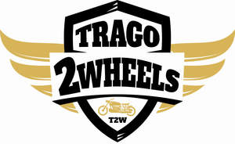

Trade Mark Journal No.2025/016 18 April 2025
UK00004183236 2 April 2025 (9,11,12,25,35,37,41,42)

- Class 9
- Motorcycle helmets; Helmets (Protective -); Protective helmets for motorists; Helmets for motorcyclists; Helmet cameras; Protective visors; Protective clothing [body armour]; Protective work clothing [for protection against accident or injury]; Protective headgear; Boots [protective footwear]; Protective clothing for the prevention of injury; Motorcycle goggles; Intercom apparatus; Intercoms; Helmet intercom; Helmet cameras.
- Class 11
- Motor vehicle lamps; Motor vehicle lights; Motorcycle lamps; Motorcycle lights; Headlamps for use on motor cycles; Anti-glare devices for automobiles [lamp fittings].
- Class 12
- Motor vehicles; Motorbikes; Motorcycles; Two-wheeled motorised vehicles; Motorcycle saddles; Motorcycle handlebars; Motorcycle saddlebags; Motorcycle tires; Motorcycle sidecars; Motorcycles for motorcross; Motorcycle engines; Motorcycle kickstands; Motorcycle frames; Motorcycle chains; Alarms for motor vehicles; Wheels for motor vehicles; Tyres for motor vehicles; Bodyworks for motor vehicles; Bodies for motor vehicles; Tyres for motorcycles; Motors for motorcycles; Mudguards for motorcycles; Saddles for motorcycles; Pedals for motorcycles; Panniers for motorcycles; Freewheels for motorcycles; Saddles for motorcycles; Wheels for motorcycles; Engines for motorcycles; Kickstands for motorcycles; Bells for motorcycles; Saddle covers for motorcycles; Rims for motorcycles; Cranks for motorcycles; Handlebar grips for motorcycles; Spokes for motorcycles; Luggage racks for motorcycles; Bicycle training wheels; Headlight mounts; Air pumps; Vehicle brake pads; Brake pedals; Brake cables; Brake callipers; Brake rotors; Windshield visors; Roller chains for motorcycles; Sissy bars for motorcycles.
- Class 25
- Sports clothing; Motorcycle clothing; Tops; T-shirts; Gloves; Trousers; Jackets; Motorcycle jackets; Motorcycle riding suits; Motorcycle rain suits; Motorcycle gloves; Motorcyclists' clothing of leather; Waterproof suits for motorcyclists; Motorcyclists' clothing.
- Class 35
- Retail services in relation to Motorcycle helmets, Helmets (Protective -), Protective helmets for motorists, Helmets for motorcyclists, Helmet cameras, Protective visors, Protective clothing [body armour], Protective work clothing [for protection against accident or injury], Protective headgear, Boots [protective footwear], Protective clothing for the prevention of injury, Motorcycle goggles, Intercom apparatus, Intercoms, Helmet intercom, Helmet cameras, Motor vehicle lamps, Motor vehicle lights, Motorcycle lamps, Motorcycle lights, Headlamps for use on motor cycles, Anti-glare devices for automobiles [lamp fittings], Motor vehicles, Motorbikes, Motorcycles, Two-wheeled motorised vehicles, Motorcycle saddles, Motorcycle handlebars, Motorcycle saddlebags, Motorcycle tires, Motorcycle sidecars, Motorcycles for motorcross, Motorcycle engines, Motorcycle kickstands, Motorcycle frames, Motorcycle chains, Alarms for motor vehicles, Wheels for motor vehicles, Tyres for motor vehicles, Bodyworks for motor vehicles, Bodies for motor vehicles, Tyres for motorcycles, Motors for motorcycles, Mudguards for motorcycles, Saddles for motorcycles, Pedals for motorcycles, Panniers for motorcycles, Freewheels for motorcycles, Saddles for motorcycles, Wheels for motorcycles, Engines for motorcycles, Kickstands for motorcycles, Bells for motorcycles, Saddle covers for motorcycles, Rims for motorcycles, Cranks for motorcycles, Handlebar grips for motorcycles, Spokes for motorcycles, Luggage racks for motorcycles, Bicycle training wheels, Headlight mounts, Air pumps, Vehicle brake pads, Brake pedals, Brake cables, Brake callipers, Brake rotors, Windshield visors, Roller chains for motorcycles, Sissy bars for motorcycles, Sports clothing, Motorcycle clothing, Tops, T-shirts, Gloves, Trousers, Jackets, Motorcycle jackets, Motorcycle riding suits, Motorcycle rain suits, Motorcycle gloves, Motorcyclists' clothing of leather, Waterproof suits for motorcyclists, Motorcyclists' clothing.
- Class 37
- Vehicle servicing; Servicing of vehicles; Servicing of vehicle engines; Motor vehicle repair; Garage services for vehicle maintenance; Maintenance of motor vehicles; Cleaning of motor vehicles; Vehicle polishing; Painting of motor vehicles; Lubrication of motor vehicles; Rustproofing of motor vehicles; Tuning of motor vehicle engines; Maintenance and repair of motor vehicles and parts thereof; Repair of motor vehicles; Maintenance and repair of motor vehicles; Maintenance and repair of motor vehicles and parts thereof; Maintenance and repair of motor vehicles engines; Motorcycle maintenance; Installation of automobile accessories; Assembly and installation of accessories for vehicles; Advisory services relating to vehicle repair; Inspection of vehicles prior to repair.
- Class 41
- Driver training; Driver safety training; Road safety training; Motor vehicle training; Motorcycle training; Motorcycle riding instruction; Motoring school services; Providing training in motor vehicle driving.
- Class 42
- Vehicle roadworthiness testing; Inspection of motor vehicles for roadworthiness; Testing of vehicles for roadworthiness; Vehicles (Testing of -) for roadworthiness; Testing of vehicles; Safety technology services relating to land vehicles; Inspection services for new and used vehicles before sale; Technical supervision and inspection; Technical inspection services; Tyre inspection services.
Trago Mills Limited
Representative: Stephens Scown LLP